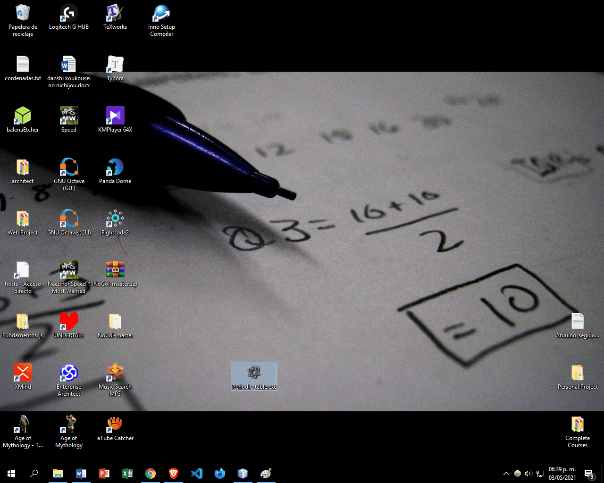
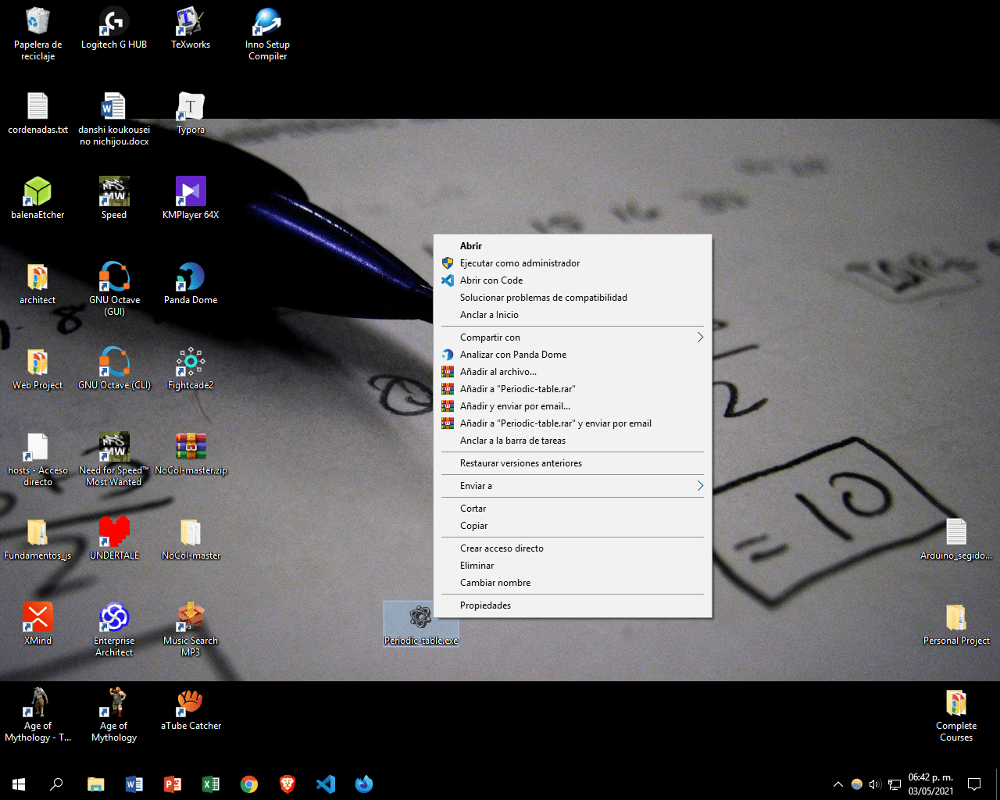
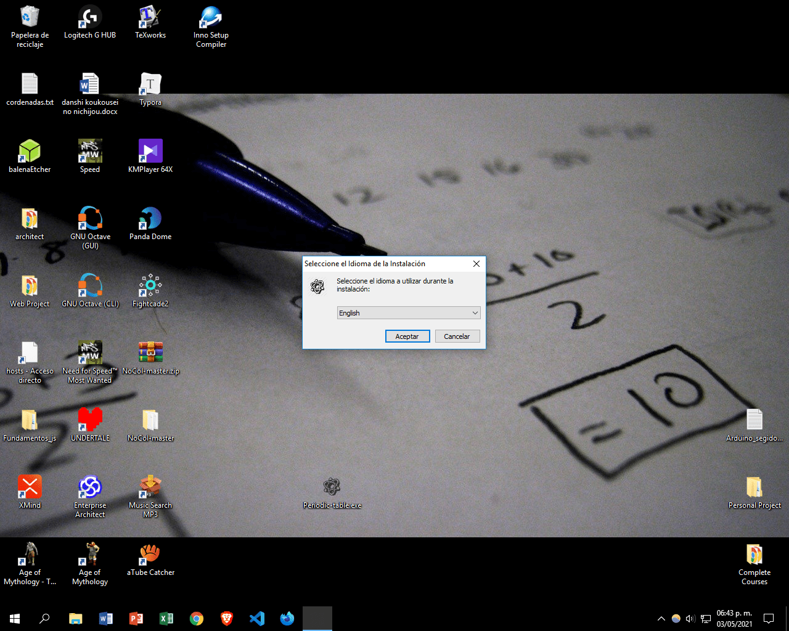
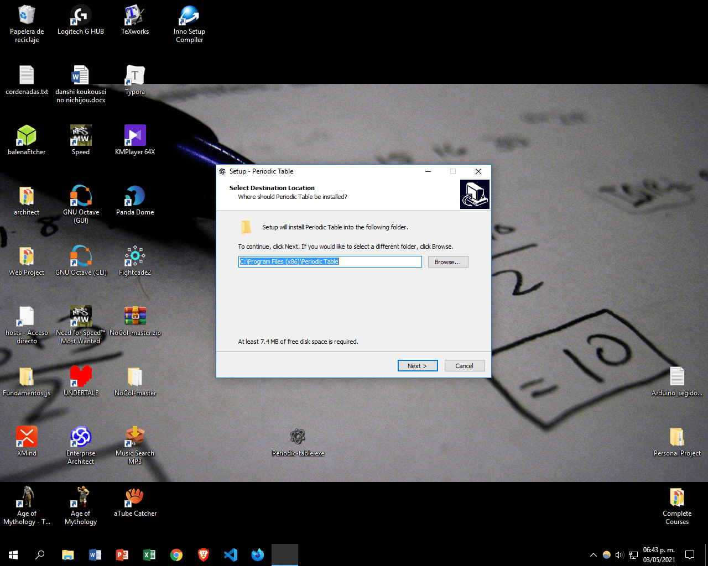
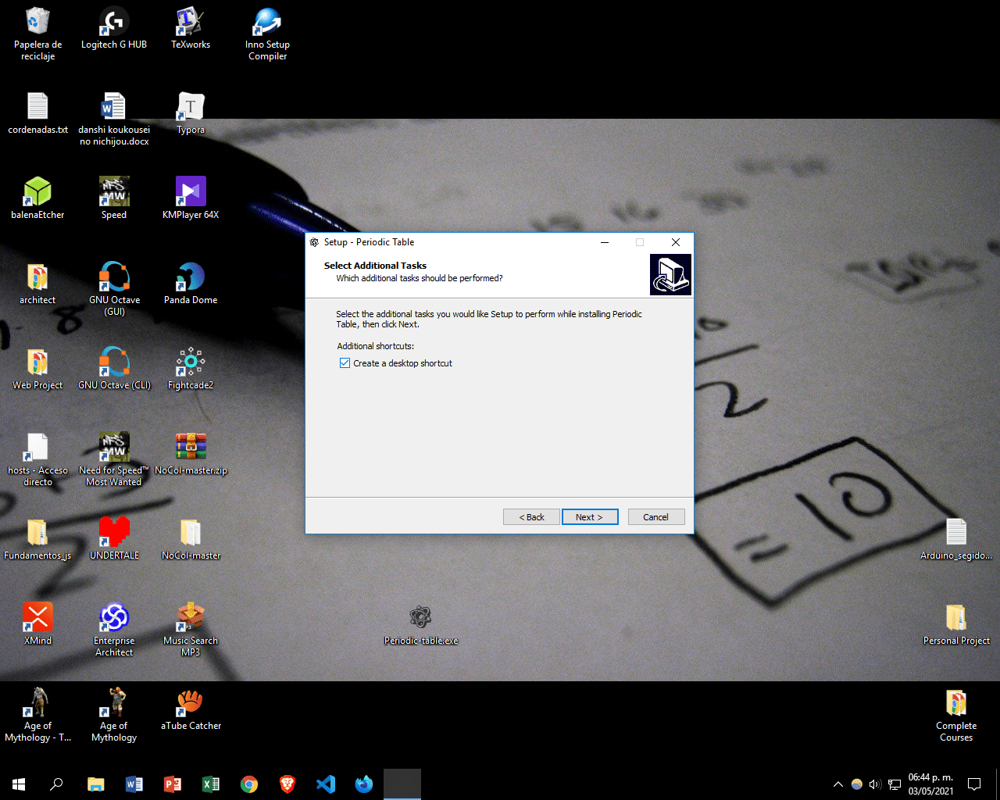
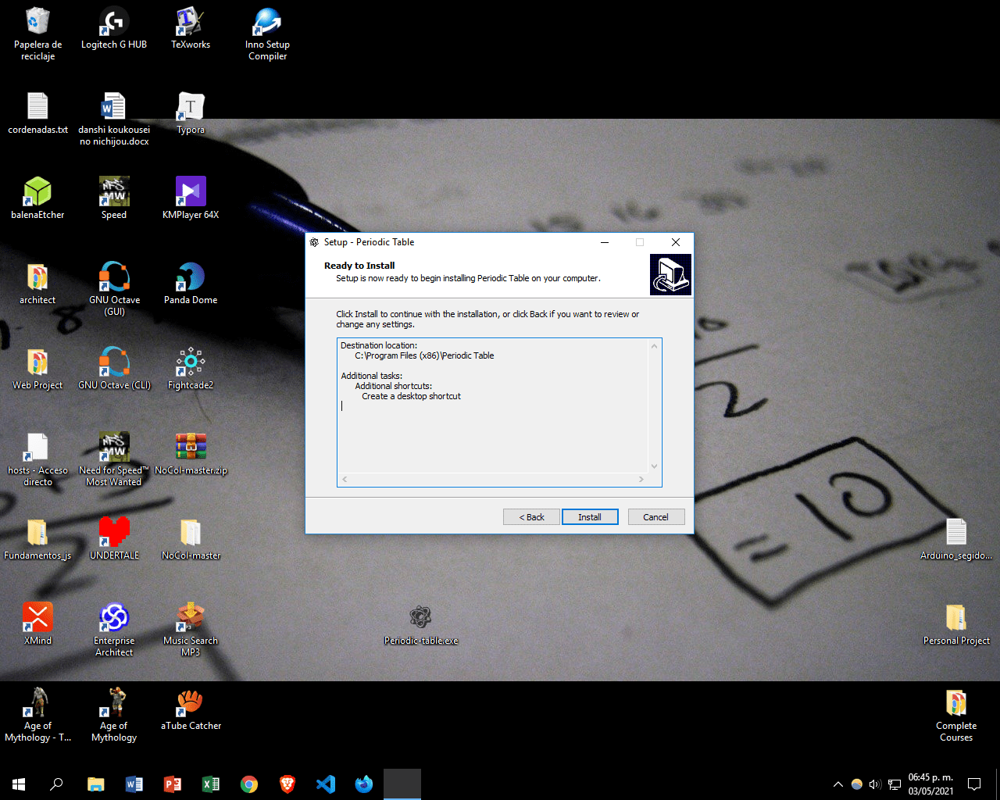
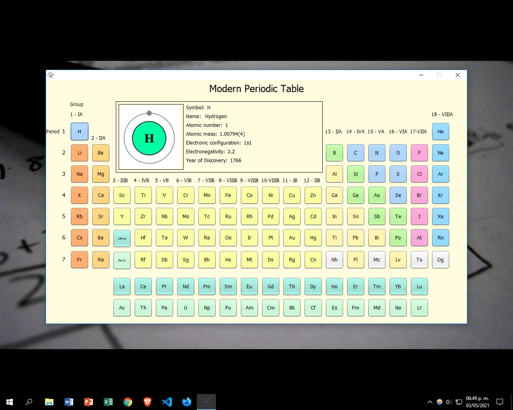

- Once we have the program, the first thing we will do is select it.
- After having done that, it opens the options tab in which we must select "Open / Abrir".
- Once the above is done, the installation process will begin and as the first part, we have to select the language we want.
- The next step is to choose the path of the program, in this step we must select the location in which the data and files of the program will be housed.
- Once the location path has been chosen, the next thing is to select the additional tasks that we would like the installation program to perform and then click on next.
- Once all the necessary steps have been carried out, they ask us if we are ready to install the program on the computer, we will select “Install” to begin the installation or you can select “Back” if you want to make a configuration change.






Using the Periodic Table program is very easy, just select the element you want and the upper screen of the table will show us a window with the information about the selected element such as its symbol, name, atomic number, atomic mass, electronic configuration, electronegativity and year of discovery and an image referring to the element. If you want to close the program just click on the "x" button, found in the upper corner of the window and click on the "-" button if you want to minimize the window.
